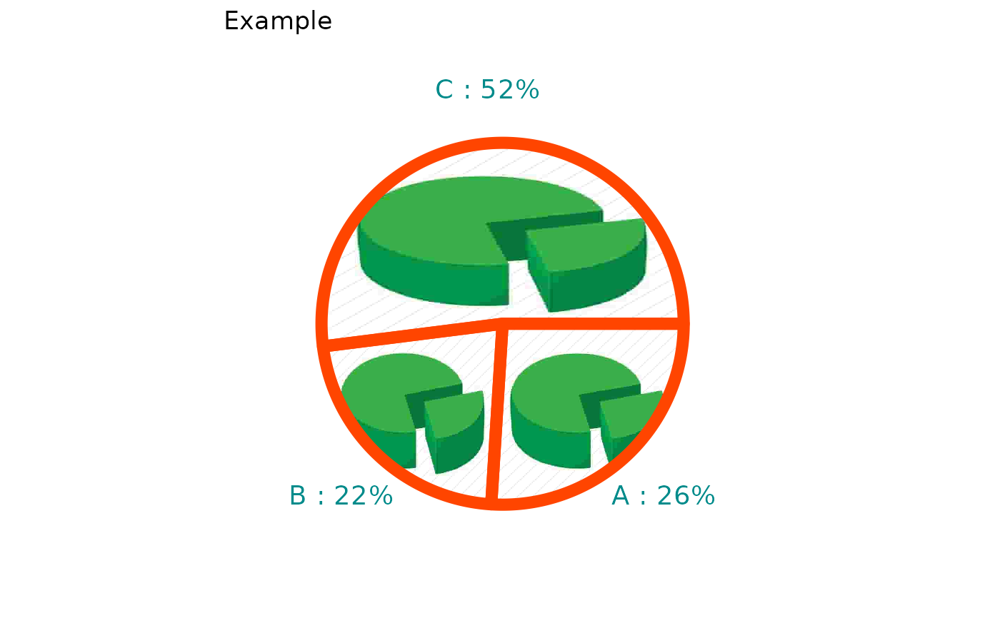

This function allows to easily add some figures to you pie chart, taking information
from the output of the pie_bake function.
You can also customize the chart by specifying the colors of borders and labels, the
title of the pie chart and where (and if) you want to print the percentages
for each group.
pie_addimages(
mypie,
imglist,
perc = "no",
lbl_col = "black",
border_col = "black",
title = ""
)A ggplot object. The output from pie_bake,
NOT from pie_bake_pro.
Don't focus on the template, only labels and values will be inherited.
A list of objects returned by and readJPEG
used to fill slices. For optimal and fast results, we recommend the use of
small files (5-10 kB).
You can choose among:
'no' : the percentages won't be displayed (default choice);
'below' : the percentages will be displayed below the group labels;
'right' : the percentages will be displayed next to the group labels.
A string containing the chosen color for the labels, default is
"black".
A string containing the chosen color for the border of the pie
chart, default is "black".
A string. If you want, you can specify the title of the graph.
A ggplot object.
Please note that this function is based on the imagepie
function.
img5 <- jpeg::readJPEG(system.file("img", "pie.jpeg", package = "tastypie"))
imgs2 <- list(img5, img5, img5)
df2 <- data.frame(
c("A", "B", "C"),
c(300, 250, 600)
)
mypie2 <- pie_bake(df2, template = "rainbow1")
pie_addimages(
mypie = mypie2,
imglist = imgs2,
perc = "right",
lbl_col = "darkcyan",
border_col = "orangered",
title = "Example"
)
